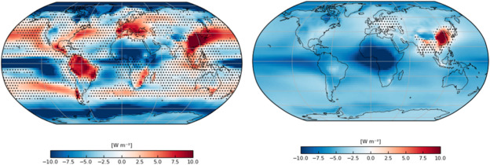
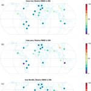
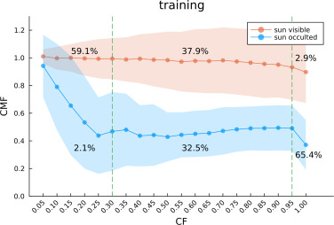
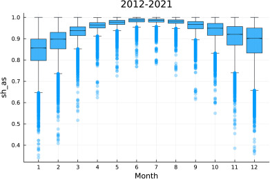
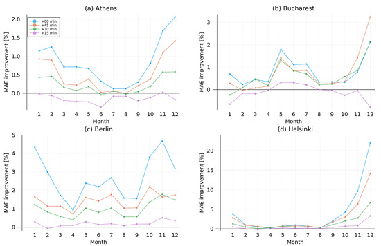
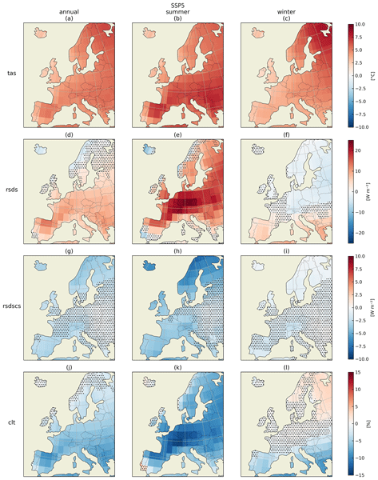
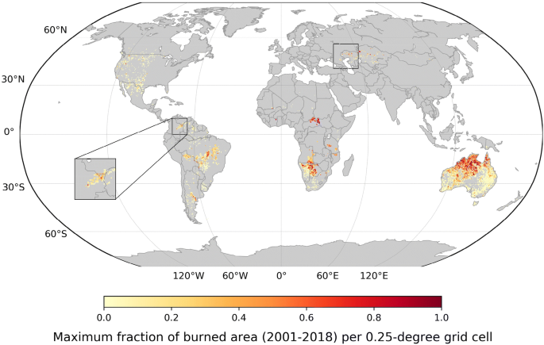

Long-term variations in solar resource under changing climate and air pollution: A review
Renewable and Sustainable Energy Reviews,Volume 237, 117008, 2026

Renewable and Sustainable Energy Reviews,Volume 237, 117008, 2026

Atmospheric Measurement Techniques, 18, 4543–4557, 2025

Solar Energy, Volume 294, 113477, 2025

Applied Energy, Volume 397, 126243, 2025

Energies, 15(9), 2996., 2022

Earth System Dynamics, 12, 1099-1113, 2021

Scientific Reports, 10, 11008, 2020